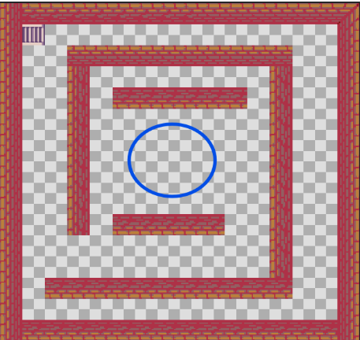

|
Kartzela ilun batean esnatu naiz, eta mamuak dabiltza nire inguruan. Ez dakit nola iritsi naizen hona, baina gauza bat argi dauket: etxera itzuli nahi dut. Mesedez, lagundu nazazu hemendik ihes egiten. Kartzelan zehar mamuak egongo dira eta mamuak ekidin behar ditugu. Kartzelatik irtetean, beste leku arriskutsuagoetara iristen naiz, non etsaiak agertzen diren eta nire bidea oztopatzen duten. Etxera sartzeko giltza bat behar dut altxor batean izkutatuta dagoena, horregatik, aurrera jarraitu behar dut arrisku guztiak gaindituz eta altxorra aurkitu arte. |
HELBURUA
Jokoaren helburua kartzelatik ihes egitea eta etxera bizirik iristea da. Horretarako, jokalariak hainbat mapa arriskutsu gainditu beharko ditu, etsaiak ekidituz.
|
1.MAPA: KARTZELA
|
2.MAPA: MENDIA
|
|
3.MAPA: ALTXORRAREN EREMUA
|
4. MAPA: ETXEA
 |